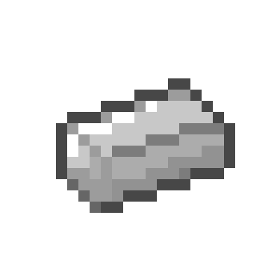

Weighted Science Brick
A SOLAR brick used to keep pressure plates activated. Its grand scientific name contrasts with the simplicity of its role in the test chambers.
Product and presentation
The science brick appears in and around SOLAR facilities, especially test chambers. The commercial description uses the name Heavy Duty Industrial Science Brick, abbreviated HDISB; the designation Weighted Science Brick emphasizes its use as a weight.
The product was unveiled at the sixth annual SOLAR-sponsored Science Expo. While its engineers called it a “marvel of technology”, the audience of Broville residents is described as confused and disappointed. Its advertising promised: “Don't be fooled by appearances; inside that brick is the future of tomorrow”.



Sales and surplus
Its originally advertised purpose was to serve as a handheld residential-use solid-state reverse-modulation oscilloscope housing unit. Despite the pompous technical description, the HDISB sold few units. SOLAR overestimated demand and was left with a large surplus, turning the brick into an expendable resource.


Use in the test chambers
Science Bricks became the most common and basic testing elements in the SOLAR Testing Center. They are usually delivered by a dispenser and placed on pressure plates, keeping them activated so that tests can be completed.
The predecessor, called Brick of Science, never passed the testing stage. Its description attributes its rejection to undetermined psychological effects and repeated reports of subjects interacting violently with technicians after receiving one.
Another SOLAR safety item
The name SOLAR Corp. Chemical Luminescent Safety Projectile identifies another product associated with the company, accompanied by an image of a firework rocket. The supplied material does not describe its operation or establish a technical relationship with the brick. The name describes a chemically luminescent safety projectile from SOLAR Corp.
See also
Sources and references
- v11.4.4 maps, signs, books and items World records
Text adapted and expanded from Heavy Duty Industrial Science Brick (contributors and history, revision 5041); SOLAR Corp. Chemical Luminescent Safety Projectile (contributors and history, revision 4256). Adapted text is available under CC BY-SA 3.0.